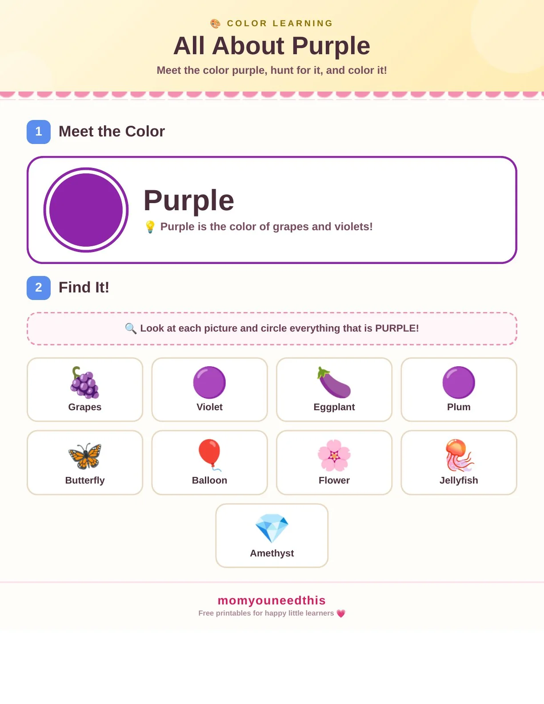

Purple Color Worksheets For Kids Practice Identifying And Naming The Color Purple
Fit for royalty — these purple worksheets help your child spot and name the color purple with playful practice.
Quick Answer
This free printable purple color worksheet helps toddlers and preschoolers learn to identify and name the color purple. Kids find, trace, and color purple objects like grapes and eggplants. Purple is a secondary color — red and blue mixed — with a royal reputation and a rarity in nature that makes every real find feel like treasure. Download and print at home with no signup needed — royal color fun for ages 2 to 4.
At a Glance
- Ages: Toddlers and preschoolers
- Activity: Finding, tracing and coloring purple objects
- Skills: Purple color recognition
- Format: Printable worksheets (PDF)
- Cost: Free, no signup
🟣 Learn The Color Purple
Purple is the treasure-hunt color. Unlike green (everywhere outdoors) or blue (the whole sky), purple hides: a bunch of grapes, an eggplant, violets in spring, a plum. Children who learn purple learn to look closely, because purple rewards the careful spotter — and this worksheet trains exactly that eye with purple-object hunts, tracing the word purple, and coloring activities.
Purple also completes a story: it is the last of the three secondary colors (with green and orange), made by mixing red and blue. A child who finishes this page and knows the green page's secret owns the whole mixing map — every secondary color accounted for, each with its recipe.

🖨️ Download Your Free Purple Color Printable
Print it out, grab the crayons, and you're ready — no signup needed.
⬇️ Download Free Printable 🖨️ Print(opens in new tab)🎁 Free printable for toddlers & preschoolers
🔍 Mix It Yourself
Mix red and blue paint together to make purple before the worksheet. Watching the new color appear is pure magic for little scientists — and purple's transformation is the most dramatic of the mixes, two strong colors becoming a third that resembles neither parent at first glance.
Vary the recipe together: more red leans the purple toward magenta and plum; more blue leans it toward violet and indigo. Your child is now adjusting a color, not just making one — the beginning of every artist's control over a palette. Then do the worksheet while the paint dries; the grapes on the page will look like relatives of the blob on the tray.
💡 Why Learn Colors One At A Time?
Purple completes the secondary color family with green and orange. Learning all three shows children the wonderful logic of how colors combine — the crayon box stops being a crowd of strangers and becomes a family tree.
Learning purple one-at-a-time matters because purple lives dangerously close to blue and pink in a toddler's eye. Isolated practice, with grapes and eggplants as anchors, draws the boundary lines: purple is its own color, darker than pink, warmer than blue, and proud of it.
📚 Keep Exploring
Discover more free color activities, printables, and learning ideas created for busy parents.
🎁 Back to Color Identification🟣 All About Purple — The Royal Treasure Color
Purple is a secondary color (red + blue), and for most of history it was the rarest color humans could wear: purple dye came from sea snails, drop by drop, and cost more than gold — which is exactly why kings and queens adopted it. Your child mixing it from two paints in five seconds is performing a feat emperors once paid fortunes for. Tell them that; preschoolers respect a color with a story.
In nature purple stays precious: grapes, plums, eggplants, violets, lavender, lilacs, amethyst crystals, and the occasional butterfly. Almost nothing common is purple, which is what makes the spotting game on this page a genuine hunt rather than a counting exercise — three finds is a triumph, not a failure.
Purple's shades have their own names worth sprinkling in: violet (bluer), lavender (paler), plum (redder, darker), magenta (brightest). Naming a shade correctly makes a child feel like an insider, and purple — the connoisseur's color — is the right place to start collecting shade words.
❓ Frequently Asked Questions
What is on the purple color worksheet?
Purple-object hunts, tracing the word purple, and coloring — everything focused on the color purple. Kids practice with grapes, eggplants, violets, and the red-plus-blue recipe that makes purple the royal mix. Kids practice with grapes, eggplants, violets, and the red-plus-blue recipe that makes purple the royal mix.
Are these color worksheets really free?
Yes — every printable on MomYouNeedThis is 100% free to download and print. No signup, no payment, just tap the download button. Do the paint-mixing tip first if you can — children who have made purple themselves finish this worksheet like owners. Do the paint-mixing tip first if you can — children who have made purple themselves finish this worksheet like owners.
Violet or purple — which should I say?
They can point to purple objects when asked and name the color purple without prompting — without calling it blue or pink, purple's two tempting wrong answers. The connoisseur's sign: they start distinguishing shades, calling the pale one lavender or the dark one plum, which means the color is truly theirs.
💜 More Color Fun You'll Love
Keep the color learning going with these related activities.
🔴 Red Color 🔵 Blue Color Pink Color